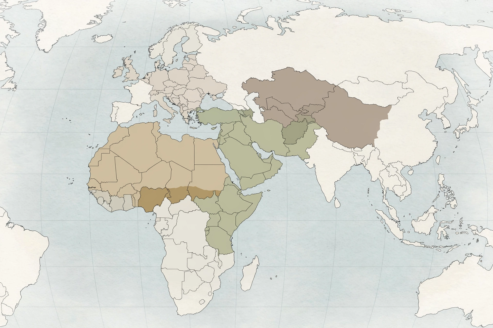

Al-Qaeda
Al-Qaeda (Arabic: القاعدة, romanized: al-Qāʿidah, lit. 'the Base') is a pan-Islamist militant organization founded in 1988 by Osama bin Laden, Abdullah Azzam, and other Arab volunteers who had fought against the Soviet invasion of Afghanistan. Designated a terrorist organization by the United Nations Security Council and numerous governments, it has carried out attacks worldwide, most notoriously the September 11 attacks of 2001 in the United States, which killed nearly 3,000 people and prompted the US-led War on Terror and the invasion of Afghanistan.

| Al-Qaeda | |
|---|---|
| Founded | 1988, Peshawar, Pakistan |
| Leaders | Osama bin Laden (1988–2011); Ayman al-Zawahiri (2011–2022); Saif al-Adel (de facto) |
| Ideology | Salafi jihadism; pan-Islamism |
| Designated | Terrorist organization (UN, US, EU and others) |
History
Al-Qaeda grew out of the Maktab al-Khidamat network that funnelled Arab fighters to the Afghan mujahideen. After the Soviet withdrawal, bin Laden turned the organization against the United States and its regional allies, issuing declarations of war in 1996 and 1998. From bases in Sudan and then Taliban-ruled Afghanistan, the group bombed the US embassies in Kenya and Tanzania (1998), attacked the USS Cole (2000), and carried out the September 11 attacks (2001).
The US invasion of Afghanistan dispersed the organization's core, but regional franchises emerged, including al-Qaeda in the Arabian Peninsula, al-Shabaab in Somalia, and groups in the Sahel. Bin Laden was killed by US forces in Abbottabad, Pakistan, in 2011; his successor Ayman al-Zawahiri was killed by a US drone strike in Kabul in 2022. Analysts generally describe the organization as weakened but persistent through its affiliates.
Ideology
Al-Qaeda's ideology combines Salafi Islam with the writings of Sayyid Qutb, holding that a vanguard of Muslims must wage jihad to expel foreign influence and overthrow governments it deems apostate, ultimately establishing a caliphate.
Categories: Al-Qaeda · Jihadist groups · Organizations designated as terrorist